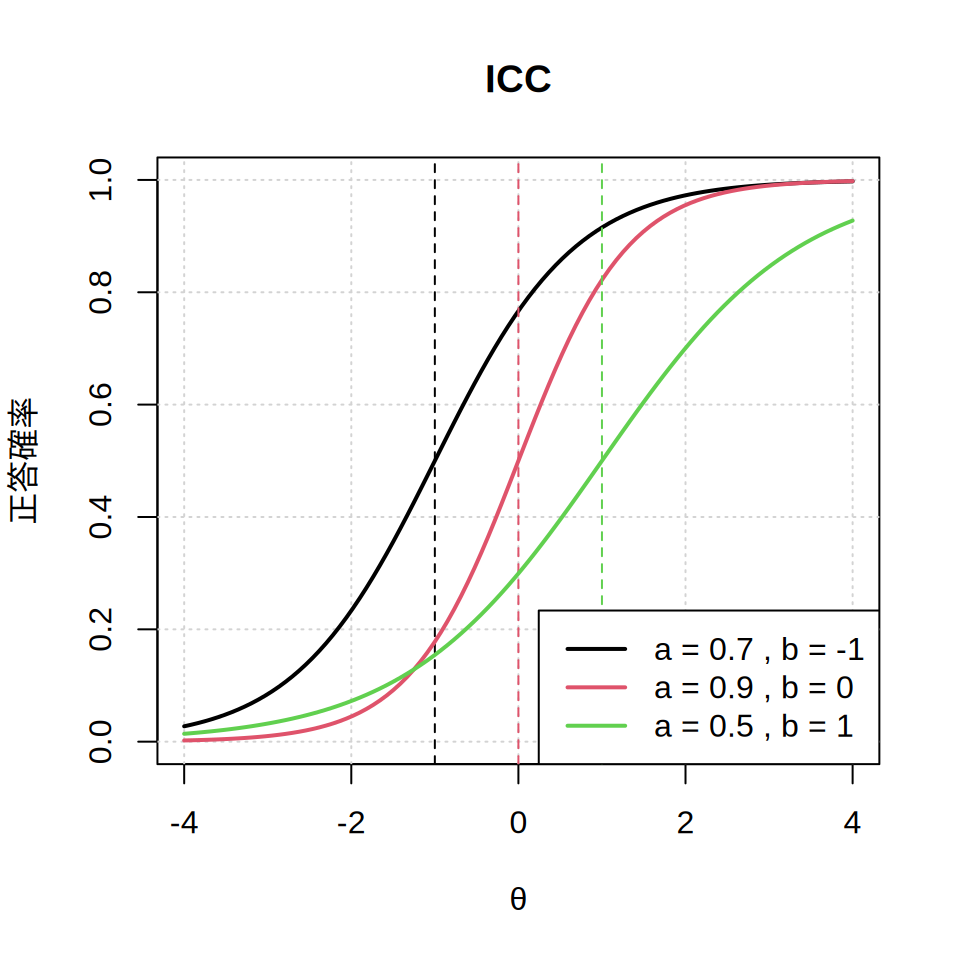
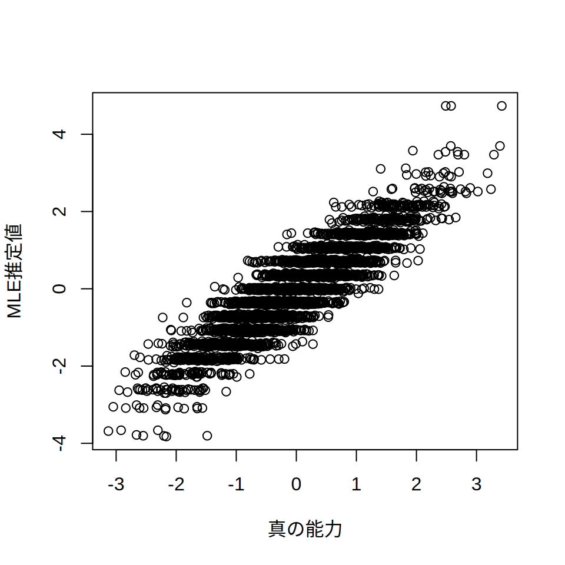

# R on Colab上でMIRTやTAMを使う
# ダウンロード
system("curl -L -o library.tar.gz https://github.com/kawa5902/LSAdata/raw/refs/heads/main/202502library.tar.gz")
# 解凍
system("tar -xzf /content/library.tar.gz -C /content")
.libPaths("library")10 項目反応理論
PISAに限らず，現代のテストでは項目反応理論 （Item Response Theory: IRT）というテスト理論が使われています。 ここでは，その概要を説明しておきましょう。
実のところ，一般的なLSAではIRTを利用したスコアは算出済みであり， 分析者がIRT分析を行う必要はありません。 とは言え，ある程度の知識がないと誤った解釈をする危険もあります。 そこで以下では，最低限知っておいたほうがよい点をポイントを絞って解説します。
なお，本章では教育測定の流儀に倣い，以下の用語を使います。
- 受検者：テストを受ける人。受験者ではない。
- 項目：テストを構成する個々の設問のこと。あるいはアイテム（item）。
- 能力：テストで測定する受検者の潜在的な測定値。いわゆる「学力」。
また，この章ではIRT分析用のRパッケージ（Mirt・TAM）を利用します。 ColabにはMirt・TAMは含まれていませんので，下記のコマンドを実行するようにしてください。 これは，ColabでIRTを行うための「裏技」です。 コマンドの意味については，intsvyを使うで解説します。
本書では，MIRTやTAMの細かい使い方は解説しません。 一般的なLSAでは受検者の能力値は算出済みであり，分析者がIRTを実行する必要はほとんどないからです。 関心のある方は，IRTの入門書を参照してください。
なお本書でMIRTやTAMに含まれる関数を使う際は， TAM::tam.wleといった具合に関数の前にTAM::あるいはMIRT::を付け， どのパッケージに含まれる関数なのか明示しています。
10.1 古典的テスト理論の課題
IRTの特徴は，古典的テスト理論（Clasical Test Theory: CTT）との対比で 説明されることが多いようです。 CTTに基づいたテストでは， 受検者がテスト項目に何問正解したか（≒正答率）を，受検者の能力と捉えます。 わかりにくい人は，いわゆる「100点満点のテスト」を想像すればよいでしょう。
さて，CTTの課題は「受検者の能力とテストの難易度が分離できない」という点です。 「100点満点のテスト」を全国の小学6年生を対象に実施したとき， ある年度のテストの平均点が60点，次の年度が70点だったとしましょう。 このとき，受検者（＝小学6年生）の学力は向上したと考えてよいでしょうか？ 答えはNoです。受検者の能力が向上したのではなく， テストが簡単になっただけかもしれません。 もちろん，まったく同じテストを用意すればCTTでも能力の変化を 測ることはできます。 ただ普通は，まったく同じテストを出題していたらテスト対策が行われ， 受検者の能力が変わらなかったとしても，次第に正答率は向上していくでしょう。
とくにメディアの発達した現代社会では， 一度出題したテストの項目を秘匿することはなかなか困難です。 そのためCTTでは， 受検者の能力やその変化を捉えることが難しく， それに代わるテスト理論が求められるようになってきたのです。
10.2 項目反応理論とは
先のCTTの課題（受検者の能力とテストの難易度が分離できない）を解決したテスト理論がIRTです。 IRTでは，受検者の能力（一般に\(\theta\)で表現されます）と， 項目の難易度（一般に\(b\)で表現されます。要は個々の項目の難しさです）を別々に考えます。 この発想により，まったく異なる項目から構成されたテストであっても， その得点を比較できるようになります。
簡単に説明すると，これは次のようなロジックです。 たとえば，ほぼ同じ「易しい」難易度の二つの項目があるとしたら， その項目は相互に入れ替え可能です。 同様に同じ難易度の項目同士を入れ替えていけば， まったく異なる項目から構成されているにもかかわらず，同じ難しさのテストが作成できます。 これで冒頭のような問い（小学6年生の学力は上がったのか？）にも答えられるようになります。
ただしIRTも万能ではありません。 ここでは，日本の学校教育にIRTを使ったテストが普及していく上での課題を3つ挙げておきます。
第一に，IRTを活用するためには事前に難易度の判明した項目が多数用意されている必要があります。 項目がたくさん集められている（≒プールされている）ので， これを項目プールと呼んだりします。 項目プールがないと，同じ難易度のテストを構成するといった作業はできません。 項目プールを作るには，多数の設問を作成し，その難易度を調べる予備調査が必須です。 これには膨大な手間がかかります。
第二に，IRTでは個々の項目は基本的に秘匿されていることが前提です。 仮に「難しい」とされている項目であっても，それが広く公開されてしまえばテスト対策が行われ， 「易しい」項目に変わってしまう危険があるからです。 大学入学共通テストのように， 日本ではテストをした直後に項目を公開することが広く行われていますが， IRTを前提にしたテストでは項目の公開は基本的にご法度です。
第三に，IRTによる能力推定は相当に煩雑です。 本書ではごく簡単に説明しますが，IRTで受検者の能力を求めるには， 「項目の難易度などを推定する作業」と 「推定された項目の難易度をもとに受検者の能力を推定する作業」が必要です。 そして，それぞれの作業に複数の異なるモデルや推定法が提案されています。 どのモデル・推定法を採用するかによって，受検者の能力は変わってきます。 これは日本の人たちが慣れ親しんでいる「10問中5問正解したから50点」といった 点数の算出方法に比べ明らかに複雑で，理解するには専門的な知識が必要です。 適切な理解を欠いていると，せっかく学力調査にIRTを導入しても 誤った結論しか得られないということにもなりかねません。
10.3 項目反応理論のモデル
それではIRTによる能力推定法の概要と， その留意点について簡単にまとめておくことにしましょう。 先ほど述べたように， 一般的なIRTによる能力推定では， 最初に困難度・識別力といった項目パラメータを推定します。 その上で，受検者の回答パターンをもとに受検者の能力を推定します。
最初の項目パラメータの推定では， 項目への正答確率（\(P\)）と 受検者の能力（\(\theta\)）・項目の難易度（\(b\)）などのあいだに 何らかの関係を仮定して，\(b\)などの値を推定していきます。 一例として，次のようなモデルを考えてみましょう。
\[P_j(\theta) = \frac{1}{1+exp(-Da_j(\theta - b_j))}\]
式中の記号の意味は，次の通りです。
- \(P_j\)：項目\(j\)に対する正答確率（0は100%誤答，1は100%正答になります）
- \(\theta\)：受検者の能力（0が平均で偏差値で言うと50に相当します。1は偏差値60です）
- \(b\)：項目困難度（項目の難しさです）
- \(a\)：項目識別力（説明は後述）
- \(D\)：尺度因子（通常1.7です。気にしなくて構いません）
この式では何のことかわからないと思いますので， 横軸に受検者の能力（\(\theta\)），縦軸に正答確率（\(P\)）をとった グラフを描いてみましょう。 Rのコードはわかりにくいので，覚えなくて構いません。
コード
icc <- function(params, tr = c(-4, 4), np = 100) {
# 引数チェック
if (!is.list(params) || !all(c("a", "b") %in% names(params))) {
stop("`params` must be a list with named elements `a` and `b`.")
}
if (length(params$a) != length(params$b)) {
stop("`params$a` and `params$b` must have the same length.")
}
# 正答確率関数
p2pl <- function(t, a, b) {
1 / (1 + exp(-1.7 * a * (t - b)))
}
# 能力範囲を生成
t_vals <- seq(tr[1], tr[2], length.out = np)
# プロットの初期化
plot(NULL,
xlim = tr, ylim = c(0, 1), type = "n",
xlab = "θ", ylab = "正答確率",
main = "ICC"
)
grid()
# 各項目の特性曲線を描画
for (i in seq_along(params$a)) {
a <- params$a[i]
b <- params$b[i]
p_vals <- p2pl(t_vals, a, b)
lines(t_vals, p_vals, lwd = 2, col = i) # 番号を色に対応
abline(v = b, col = i, lty = 2) # 困難度のライン
}
# 凡例を追加
legend("bottomright",
legend = paste("a =", params$a, ", b =", params$b),
col = seq_along(params$a), lwd = 2, bg = "white"
)
}
params1 <- list(
a = c(0.7, 0.9, 0.5),
b = c(-1, 0, 1)
)
icc(params1)

図 10.1 は3つの項目（黒・赤・緑）を例に，受検者の能力と正答確率の関係を図示したものです。 いずれの項目も受検者の能力（\(\theta\)）が高いほど（＝右へ行くほど）正答確率が上昇しており， \(\theta\)が4ともなれば，どの項目もほぼ100%正答になることを示しています。 逆に\(\theta\)が低いほど（＝左へ行くほど）正答確率は下がり， \(\theta\)が-4の人はどの項目も正答確率はほぼ0%です。 図中の縦線は，正答確率がちょうど50%になるときの\(\theta\)の値を示した線です。
ここで，\(b\)は困難度・\(a\)は識別力と呼ばれるパラメータです。 図 10.1 を見ると，\(b\)の高い項目ほど正答確率が50%になるために 必要な\(\theta\)が高いことがわかると思います。 要は\(b\)が高いほうが「難しい」項目だということです。 \(a\)はわかりにくいかもしれませんが，\(a\)が高い項目ほど 曲線の立ち上がりが急激である（≒能力が上昇したときに正答確率が大きく上がる） ことに気づくと思います。
たとえば，赤の曲線（\(a\)が0.9）は\(\theta\)が-1のときは正答確率が20%程度ですが， \(\theta\)が0で50%，\(\theta\)が1で80%程度と，大きく正答確率が上昇しています。 他方，緑の曲線（\(a\)が0.5）は\(\theta\)が-1のときの正答確率は20%程度で， \(\theta\)が3になっても正答確率が80%程度と，正答確率の上昇が緩やかです。
要は\(a\)が高い項目のほうが， 受検者の能力を区別することができる（≒識別できる）ということです。 \(a\)が極端に低い項目は，受検者の能力が高かろうが低かろうが正答確率が変わらないわけで， 受検者の能力を知るという観点からは，あまり出題する意味がない（≒「悪問」）ということになります。
ここまで見てきたような「個々の項目に困難度と識別力というパラメータがある」ことを想定するモデルは， 2PL（2パラメータ・ロジスティックモデル）と呼ばれます。 他にも識別力を考えない1PLや，偶然に正解する確率を考慮する3PLなど， いくつかのモデルが存在します。 さらに今回のモデルは，正答と誤答しか考えていませんが， 部分正答を考える部分得点モデル（Partial Credit Model: PCM）というモデルも存在します。 IRTを利用したテストでは，こうしたモデルからいずれかを設定し（あるいは複数を採用し）， \(b\)や\(a\)などのパラメータを推定していくことになります。
パラメータが推定されたら，次は受検者の回答をもとに能力推定を行います。 ここでも複数の能力推定法があり，それぞれ異なる特性を持ちます。 有名な推定法には，MLE（最尤推定）やEAP（期待事後確率）があります。 PISAでは，WLE（重み付け最尤推定）という推定法も使われています。 これら能力推定法を大雑把に分類すると， 受験者の能力分布について仮定を置かないもの（MLEやWLE）と 正規分布などの仮定を置くもの（EAP）に分けられます。 個々の推定法の説明は，かなり難しいので本書では扱いません。 興味のある方は，参考文献[1–3]で勉強してみてください。
10.4 重複テスト分冊法
IRTの利点は，受検者が異なるテストを受検しても能力推定が可能であるという点でした。 LSAでは，こうしたIRTの利点を活かした手法が採用されています。 ここではその代表例として，重複テスト分冊法（Matrix Sampling Design）を紹介します。
| 分冊 ID | Block 1 （10項目） |
Block 2 （10項目） |
Block 3 （10項目） |
Block 4 （10項目） |
Block 5 （10項目） |
|---|---|---|---|---|---|
| 分冊 1 | ○ | ○ | ✗ | ✗ | ✗ |
| 分冊 2 | ✗ | ○ | ○ | ✗ | ✗ |
| 分冊 3 | ✗ | ✗ | ○ | ○ | ✗ |
| 分冊 4 | ✗ | ✗ | ✗ | ○ | ○ |
| 分冊 5 | ○ | ✗ | ✗ | ✗ | ○ |
LSAで受検者の能力を適切に測定するには，できるだけ多くの項目を出題する必要があります。 項目数が少ないと幅広く学力を調べることができず，たまたま得意な問題だった（あるいは苦手な問題だった） という事態が起こりえます。 こうなると，せっかく全国の子どもを調査する意味が薄れます。 その一方，出題する項目数が増えると，今度は受検者の負担が大きくなります。 そこで，幅広い項目を出題しつつ受検者の負担は減らすために， LSAでは項目をいくつかの分冊（分冊）に分けて， 個々の受検者に異なる設問を出題するという手法が取られています。 これを重複テスト分冊法と呼びます。
表 10.1が，その概要です。 Block 1からBlock 5は，項目のグループだと思ってください。 仮に1つのBlockで10項目を出題したとすると，全体で見れば50項目が出題できるというわけです。 もちろんBlockの数を増やせば，さらに多くの項目を出題できます。 ただ，そのままだとBlock 1とBlock 2を受検した受検者の能力を比べることはできません。 Block 1の項目とBlock 2の項目が同じ難しさかどうかわからないからです。 事前に個々のBlockの難易度を完全に同じに保つことができればよいのですが， 項目数が少ないこともあってなかなかに困難です。
そこで表 10.1のように， Block 1とBlock 2を分冊1，Block 2とBlock 3を分冊2・・・といった具合に， 個々のBlockを対にして分冊を作成します。 そして，この分冊を個々の受検者に配布します。 こうすると分冊1と分冊2を受検した受検者たちは，いずれもBlock 2の項目に回答していますから， Block 2の項目への回答状況を手がかりに， 相互に比較可能な形でBlock 1・Block 2・Block 3の項目の難易度を推定することができます。 Block 1・Block 2・Block 3の項目の難易度がわかれば， 分冊1と分冊3を受検した受検者の能力を比べることもできるというわけです。
分冊1と分冊3の受検者は重複していませんが， 分冊1と分冊2，分冊2と分冊3にはそれぞれ重複（Block 2とBlock 3）がありますので， まずBlock 1とBlock 2の難易度を比べ，それからBlock 2とBlock 3，Block 3とBlock 4の難易度を比べることで， 相互に比較可能なBlock 1からBlock 4までの難易度を推定することができます。 こうなれば，分冊1と分冊3を受検した受検者の能力を比較することが可能です。
重複テスト分冊法を利用すれば，幅広い項目を出題しつつ，受検者の負担を抑えることが可能です。 先の例で言うと，個々の受検者は20問しか受検していませんので，個々人の能力推定は正確なものにはなりません （＝測定誤差が大きくなる）。 ただ全体としてみれば100問が出題できていますので，その国（あるいは地域）の子どもの得意・不得意はよくわかります。
ちなみに，近年のLSAではCBTが導入されるようになってきています。 CBTの利点はいくつかありますが，その一つに受検者の能力をより正確に測定できるというものがあります。 紙のテストでは，どうしてもテストが受検者にとって簡単すぎる／難しすぎるということが起こります。 そこで最初に標準的な設問で構成されたBlockを出題しておき， その反応をもとに能力の高い受検者には難しいBlockを，逆に低い受検者には簡単なBlockを割り当てることで， より正確に受検者の能力を知ることができるようにしているのです。
10.5 異なるサイクル間での能力比較
多くのLSAでは，異なる年度で実施されたテストであっても，その得点を直接に比較し， 学力が上がった／下がったという判断を下すことができます。 ここにもIRTの技術が使われています。
| Year | block A | block B | block C | block D |
|---|---|---|---|---|
| 2010年調査 | ○ | ○ | ✗ | ✗ |
| 2015年調査 | ✗ | ○ | ○ | ✗ |
| 2020年調査 | ✗ | ✗ | ○ | ○ |
能力の変化を捉えるための調査デザインは，基本的には重複テスト分冊法の発想と同じです。 たとえば5年おきに実施されるLSAがあったとしましょう。 ここでテスト項目のBlock（A〜D）を表 10.2のように配置すれば， 2010年・2015年・2020年の調査の成績を直接に比較できるようになります。 たとえば2010年調査と2015年調査の比較であれば， 両者に共通するBlock Bの項目の難易度を手がかりに， Block Aの項目とBlock Cの項目の難易度を比べることができ， 2010年度調査の受検者と2015年度調査の受検者の能力も比べることができるようになるというわけです。
ここで重要なことは，Block BやBlock Cのような共通の項目の情報が，受検者に秘匿されていることです。 仮に2010年調査でBlock Bの項目の内容が漏洩してしまったとすると， 2010年調査の受検者にとってのBlock Bの難易度と，2015年調査の受検者にとってBlock Bの難易度が変わってしまいます （おそらく，2015年調査の受検者は2010年調査の受検者に比べ，Block Bを易しく感じるでしょう）。 この場合，2010年調査と2015年調査の得点を調整する作業は失敗します。 PISAやTIMSSでは，調査項目の一部が公開されていますが， これはBlock Aのような今後の調査ではもう使わない項目が対象になっているのです。
10.6 Rによる推定
最後に，Rを利用してIRTを行う例を紹介しておきます。 素のRでIRTを行うのは難しいので， mirtとTAMというパッケージ1を利用しました。 IRTの分析は難しいので，以下のコードは理解できなくても構いません。 ここでは，受検者のサンプルサイズが4000，項目数は20問のテストを想定しています。 IRTのモデルは2PL，項目の困難度は-3から3のあいだで均等に分布し， 項目の識別力は0.9としました。
最初に，受検者の反応パターン（20項目に対する正誤）のデータを生成します。 データの生成は，mirtのsimdata関数を使っています。
# パラメータの定義
set.seed(123)
size <- 4000 # サンプルサイズ
item_n <- 20 # 項目数
b <- seq(-3, 3, length.out = item_n) # 項目困難度
a <- 0.9 # 項目識別度
# theta
theta <- rnorm(size, 0, 1)
# 反応パターンを生成
resp <- mirt::simdata(
a = rep(1.7 * a, item_n),
d = -b * 1.7,
Theta = theta,
itemtype = "2PL"
)続いて，2PLによる分析を行います。 ここでは，TAMのtam.mml.2pl関数による推定を行っています。 引数のverbose = FALSEは出力を抑制する設定です。
mod <- TAM::tam.mml.2pl(resp, verbose = FALSE)TAMで困難度と識別力を出力するのはやや面倒で， 以下のような手順を踏む必要があります。 Colabだと出力が見づらいので，as.data.frameという関数を使い， 出力をデータフレームに変換しています。
# 識別力
a_param <- mod$B[, 2, 1] / 1.7
as.data.frame(round(a_param, 2)) round(a_param, 2)
Item_1 1.01
Item_2 0.85
Item_3 0.90
Item_4 0.88
Item_5 0.83
Item_6 0.98
Item_7 0.87
Item_8 0.84
Item_9 0.98
Item_10 0.93
Item_11 0.90
Item_12 0.89
Item_13 0.90
Item_14 0.88
Item_15 0.95
Item_16 0.95
Item_17 0.81
Item_18 0.85
Item_19 0.99
Item_20 1.09# 困難度
b_param <- mod$xsi[, 1] / mod$B[, 2, 1]
as.data.frame(round(b_param, 1)) round(b_param, 1)
Item_1 -3.2
Item_2 -3.2
Item_3 -2.6
Item_4 -2.3
Item_5 -2.0
Item_6 -1.5
Item_7 -1.3
Item_8 -0.9
Item_9 -0.5
Item_10 -0.2
Item_11 0.2
Item_12 0.5
Item_13 0.8
Item_14 1.3
Item_15 1.5
Item_16 1.9
Item_17 2.4
Item_18 2.7
Item_19 2.8
Item_20 2.9続いて，受検者の能力推定を行います。 ここでは，EAP・MLE・WLEによる推定方法を示しています。
eap <- mod$person$EAP #EAP
mle <- TAM::tam.wle(mod, progress = FALSE, WLE = FALSE)$theta # MLE
wle <- TAM::tam.wle(mod, progress = FALSE)$theta #WLE得られた能力値を，真の能力値と比べてみましょう。 ここではMLEを例に， 真の能力（\(\theta\)）と推定された能力をplotで散布図にしてみましょう。 ついでに，cor関数で相関係数も算出します。
plot(theta, mle, xlab = "真の能力", ylab = "MLE推定値")
cor(theta, mle)[1] 0.9010776散布図や相関係数を見ると，確かに関連は強いのですが， それでも完全に一致するわけではないことがわかります。 もっとも直感的にはこれは当然で， たった20問のテストですから 1〜2問程度はたまたまできた（あるいは間違えた）項目が存在し， 結果として真の能力と推定された学力に差が生じるということです。
ただ，このズレが母集団を推定するときには問題になります。 今，MLE，WLE，EAPの各推定値を使い，母集団の平均と分散を計算してみましょう。
stat <- function(x) round(c(mean = mean(x), var = var(x)), 2)
lapply(list(theta = theta, mle = mle, wle = wle, eap = eap), stat)$theta
mean var
0.01 0.99
$mle
mean var
0.00 1.26
$wle
mean var
0.00 1.23
$eap
mean var
0.00 0.81 平均値（mean）はどの推定法も0.0なので，真の値（0.01）とほとんど同じです。 問題は分散（var）で，真の値（theta）が0.99に対し， いずれの推定法にもズレが生じています。 傾向として，MLEとWLEは過大推定，EAPは過小推定しているようです。 分散の推定値がズレるということは，標準誤差にズレが生じます。 そして標準誤差がズレると，母集団に対する誤った推測に゙繋がります。 推算値法では，この問題を改善する方法を解説します。
分析のために作成した関数をまとめたものです。 世界中のRユーザによって開発されたパッケージがインターネット上に公開されており， その中から必要なものを選んで使うことができます。↩︎